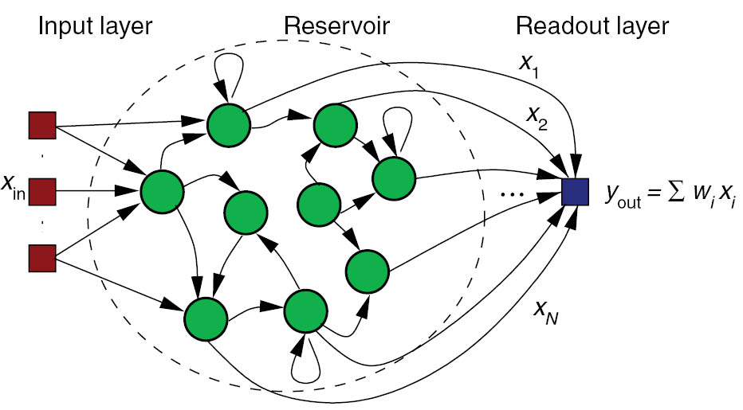

Beyond deep Learning
Work in progress.
Towards biological deep learning?
The credit assignment problem
The credit assignment problem is the issue of knowing which part of the brain is responsible when something goes wrong (or well) so that it can learn from it.

Backpropagation solves the credit assignment problem by transmitting the error gradient backwards through the weights (\sim synapses).
\Delta W_0 = \eta \, (\mathbf{t} - \mathbf{y}) \times W_1 \times \mathbf{x}^T

But information only goes in one direction in the brain: from the presynaptic neuron to the postsynaptic one. A synapse does know not the weight of other synapses and cannot transmit anything backwards. Backpropagation is not biologically plausible in its current formulation.
Feedback alignment
An alternative mechanism consists of backpropagating the error through another set of feedback weights (feedback alignment, (Lillicrap et al., 2016)). Feedback connections are ubiquitous in the brain, especially in the neocortex. The feedback weights do not need to learn: they can stay random but still transmit useful gradients. The mechanism only works for small networks on MNIST for now.

Deep learning architectures are way too simple and unidirectional
Deep learning architectures are mostly unidirectional, from the input to the output, without feedback connections. The brain is totally differently organized: a big “mess” of interconnected areas processing everything in parallel. The figure on the left is only for vision, and only for the cerebral cortex: the thalamus, basal ganglia, hippocampus, cerebellum, etc, create additional shortcuts. Is the complex structure of the brain just a side effect of evolution, or is it the only possible solution? Inductive bias: the choice of the architecture constrains the functions it can perform / learn.

Biological neurons have dynamics
The artificial neuron has no dynamics, it is a simple mathematical function:
y = f( \sum_{i=1}^d w_i \, x_i + b)
If you do not change the inputs to an artificial neuron, its output won’t change. Time does not exist, even in a LSTM: the only temporal variable is the frequency at which inputs are set.
Biological neurons have dynamics:
- They adapt their firing rate to constant inputs.
- They continue firing after an input disappears.
- They fire even in the absence of inputs (tonic).
These dynamics are essential to information processing in the brain.
Recurrent dynamics and emergence of functions
Recurrent networks of dynamical neurons can exhibit very complex dynamics. Biological neural networks evolve at the edge of chaos, i.e. in a highly non-linear regime while still being deterministic. This allows the emergence of complex functions: the whole is more than the sum of its parts.

Self-organization
There are two complementary approaches to unsupervised learning:
- the statistical approach, which tries to extract the most relevant information from the distribution of unlabeled data (autoencoders, etc).
- self-organization, which tries to understand the principles of organization of natural systems and use them to create efficient algorithms.
Self-organization is a generic process relying on four basic principles: locality of computations, learning, competition and cooperation.
Self-organization is observed in a wide range of natural processes:
- Physics: formation of crystals, star formation, chemical reactions…
- Biology: folding of proteins, social insects, flocking behavior, brain functioning, Gaia hypothesis…
- Social science: critical mass, group thinking, herd behavior…
A self-organizing system is composed of elementary units (particles, cells, neurons, organs, individuals…) which all perform similar deterministic functions (rule of behavior) on a small part of the available information.
There is no central supervisor or coordinator that knows everything and tells each unit what to do: they have their own rule of behavior and apply it to the information they receive. The units are able to adapt their behavior to the available information: principle of localized learning. There is no explicit loss function specifying what the system should do: emergence.

The rules of Conway’s Game of Life (1970) are extremely simple:
- A cell is either dead or alive.
- A living cell with less than 1 neighbor dies.
- A living cell with more than 4 neighbors dies.
- A dead cell with 3 neighbors relives.
Despite this simplicity, GoL can exhibit very complex patterns (fractals, spaceships, pulsars). The GoL is an example of self-organizing cellular automata https://en.wikipedia.org/wiki/Conway%27s_Game_of_Life.
Key differences between deep networks and the brain
- No backpropagation in the brain, at least in its current form.
- Information processing is local to each neuron and synapse.
- Highly recurrent architecture (feedback connections).
- Neurons have non-linear dynamics, especially as populations (edge of chaos).
- Emergence of functions: the whole is more than the sum of its parts
- Self-organization. There is no explicit loss function to minimize: the only task of the brain is to ensure survival of the organism (homeostasis).